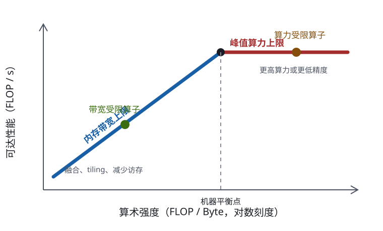

发展脉络
系统优化从 GPU 层次结构、Roofline 和通信原语出发，逐步发展到 FlashAttention、算子融合、编译器和端到端 profiling。
「训一个 70B 模型要多少张卡、跑多少天？」——如果你答不上来，就还没准备好训模型。这一节教你用手算回答这个问题：从参数量到训练 FLOP，从显存占用到通信量，再到 Roofline 分析和 MFU。全程只用小学算术和几个记得住的常数，把「大概要花多少钱」变成一个可推导的工程问题。
做训练预算就是回答三个问题：算多少（总 FLOP）、存多少（显存占用）、跑多快（MFU 和通信）。把这三个数算清楚，「几张卡跑几天」就是一道除法题。整条链路上只需要记住四个常数：训练 6PD、推理 2P、Adam 16 字节/参数、MFU 约 40%。
先打个比方：预算一场搬家，你得先数清家里有多少件家具，才能估算要叫几辆货车。做训练预算也一样——参数量就是「家具件数」，一切后续的算力、显存、时间估算都从它出发。所以这一节先把它算准。
一切预算的起点是参数量。一个 decoder-only Transformer 的参数几乎全部来自三处：Embedding、Attention、FFN。我们以一个标准配置为例手算。
假设模型配置：$L$ 层，隐藏维度 $d$，词表大小 $V$，FFN 中间维度 $d_{ff}$（标准 FFN 取 $4d$，SwiGLU 常取 $\approx \frac{8}{3}d$ 再对齐到整数）。
| 组件 | 参数量公式 | 说明 |
|---|---|---|
| Token Embedding | $V \times d$ | 词表 × 隐藏维度 |
| 每层 Attention（MHA） | $4 \times d^2$ | $W_Q, W_K, W_V, W_O$ 各 $d \times d$ |
| 每层 Attention（GQA） | $2d^2 + 2 \times d \times d_{kv}$ | $d_{kv} = n_{kv} \times d_{head}$，K/V 头数少了就省这么多 |
| 每层 FFN（标准） | $2 \times d \times d_{ff} = 8d^2$ | up 和 down 两个线性层 |
| 每层 FFN（SwiGLU） | $3 \times d \times d_{ff}$ | gate / up / down 三个矩阵 |
| 每层 RMSNorm | $\approx 2d$ | 相对 $d^2$ 项可忽略 |
| LM Head | $V \times d$ | 有些模型与 Embedding 共享（tied），有些不共享 |
标准 FFN 的每层参数量约 $12d^2$（Attention $4d^2$ + FFN $8d^2$），总参数量近似为：
这个式子最有用的地方是看清参数量的来源比例：$d^2$ 项随维度平方增长，$Vd$ 项只随维度线性增长。所以模型越大，Embedding 的占比越小——7B 模型里 Embedding 约占 2%，70B 模型里不到 1%。反过来，一个 0.5B 的小模型如果配了 15 万词表，Embedding 可能占掉三分之一，这时「参数量」这个指标就会误导人。
| 模型 | $L$ | $d$ | $d_{ff}$ | 注意力头 / KV 头 | 公式估算 | 标称参数量 |
|---|---|---|---|---|---|---|
| Llama-2 7B | 32 | 4096 | 11008 | 32 / 32（MHA） | 约 6.6 B | 6.7 B |
| Llama-2 13B | 40 | 5120 | 13824 | 40 / 40（MHA） | 约 12.9 B | 13.0 B |
| Llama-2 70B | 80 | 8192 | 28672 | 64 / 8（GQA） | 约 69 B | 69 B |
配置数值以各模型官方 config 文件为准。可以看到手算误差都在 2% 以内——对做预算来说完全够用。
Llama-2 7B（$L = 32$，$d = 4096$，$V = 32000$，SwiGLU $d_{ff} = 11008$，MHA）：
Llama-2 70B（$L = 80$，$d = 8192$，$d_{ff} = 28672$，64 个注意力头 / 8 个 KV 头、$d_{head} = 128$）：
注意 70B 里 FFN 占了 82% 的参数。这就是为什么 MoE 选择把 FFN 稀疏化而不是把 Attention 稀疏化——那里才是参数量的大头。
训练总 FLOP 最常用的估算法则是 6PD：每个参数在每个 token 上做约 6 次浮点运算。
其中 $P$ 是参数量，$D$ 是训练 token 总数。
为什么是 6？一次矩阵乘 $Y = XW$，$X$ 是 $(B, d_{in})$、$W$ 是 $(d_{in}, d_{out})$，输出有 $B \times d_{out}$ 个元素，每个元素要做 $d_{in}$ 次乘加（即 $2d_{in}$ FLOP）。所以前向 FLOP $= 2 \times B \times d_{in} \times d_{out} = 2 \times B \times (\text{该层参数量})$。每个参数每个样本贡献 2 FLOP，这就是「2」的由来。
反向传播要算两个梯度：对输入的梯度 $\partial L/\partial X = \partial L/\partial Y \cdot W^\top$，对权重的梯度 $\partial L/\partial W = X^\top \cdot \partial L/\partial Y$。两者各是一次同规模的矩阵乘，各 $2$ FLOP/参数/token，合计 4。前向 2 + 反向 4 = 6。
这条法则最大的价值不在于精确，而在于快。当有人问「我们能不能自己训一个模型」时，你不需要打开任何工具，心算就能给出量级。举个真实会遇到的场景：团队想在自有的领域语料上做一次 3B 模型的继续预训练，手上有 200B tokens 的数据，机房里有 8 张 A100 80G。能不能干？
先算总算力：$6 \times 3\times10^{9} \times 2\times10^{11} = 3.6\times10^{21}$ FLOP。A100 的 BF16 峰值算力是 312 TFLOP/s，按 MFU 40% 折算，单卡有效算力约 $1.25\times10^{14}$ FLOP/s，8 张卡合计约 $10^{15}$ FLOP/s。于是工期 $= 3.6\times10^{21} \div 10^{15} = 3.6\times10^{6}$ 秒，约 42 天。
这个数字一出来，决策就清楚了：42 天连轴转、中间不能出任何故障，对一个业务团队来说风险太高。可选的三条路各自的代价也随之明确——砍数据（降到 50B tokens，工期约 10.5 天，但领域知识注入不充分）、砍模型（换 1B 模型，工期约 14 天，但能力上限下降）、加卡（租 32 张卡跑 10.5 天，成本上升但工期可控）。注意第三条并不是简单的四倍加速：跨机之后通信从 NVLink 掉到 InfiniBand，MFU 大概率从 40% 掉到 30% 出头，实际工期要按 13–14 天预留。整个推演只用了两次乘法和一次除法，却把一个「要不要立项」的问题变成了可讨论的三选一。这就是记住 6PD 的意义。
6PD 只统计了「和参数量成正比」的矩阵乘。但注意力里的 $QK^\top$ 和 $PV$ 这两次矩阵乘不涉及任何参数——它们的计算量和序列长度 $s$ 成正比，被 6PD 完全漏掉了。补上这一项：
推导：单层前向，$QK^\top$ 的规模是 $(s \times d) \times (d \times s)$，FLOP $= 2s^2d$；$PV$ 同样 $2s^2d$。合计每层前向 $4s^2d$，摊到每个 token 就是 $4sd$。$L$ 层、乘 3（前向 + 反向）得到 $12Lds$。
| 模型 / 序列长度 | $6P$（GFLOP/token） | $12Lds$（GFLOP/token） | Attention 占比 | 结论 |
|---|---|---|---|---|
| Llama-2 7B，$s = 2048$ | 40.2 | 3.22 | 7.4% | 可以忽略，6PD 够用 |
| Llama-2 7B，$s = 4096$ | 40.2 | 6.44 | 13.8% | 开始不能忽略 |
| Llama-2 7B，$s = 32768$ | 40.2 | 51.5 | 56% | Attention 已经超过参数计算量 |
| Llama-2 7B，$s = 131072$ | 40.2 | 206 | 84% | 长上下文训练的算力主要花在注意力上 |
这张表解释了长上下文训练为什么这么贵：序列长度翻倍，参数那部分的计算量不变，但注意力那部分翻倍。当 $s$ 超过约 $P / (2Ld)$ 时，注意力就成了主要开销。对 7B 模型这个临界点大约在 $s \approx 25000$。也正因如此，FlashAttention 和各种长上下文技术才成为刚需。
把显存想成搬家公司的货车：权重是家具本体，梯度是打包时产生的废料，优化器状态是打包箱和气泡膜，激活值是临时堆在玄关的杂物。很多人只算「家具占多少」，结果货车装不下——因为打包材料比家具本身还占地方。训练显存正是这样：一个模型的权重放得下，不代表训得动。训练显存分四块：
| 组成部分 | 字节/参数 | 7B 模型 | 70B 模型 | 说明 |
|---|---|---|---|---|
| BF16 权重 | 2 | 14 GB | 140 GB | 前向反向用的计算副本 |
| BF16 梯度 | 2 | 14 GB | 140 GB | 反向传播产出 |
| FP32 主权重 | 4 | 28 GB | 280 GB | 累积小更新用，防止 BF16 精度不足吃掉更新量 |
| Adam 一阶动量 $m$ | 4 | 28 GB | 280 GB | FP32 |
| Adam 二阶动量 $v$ | 4 | 28 GB | 280 GB | FP32 |
| 固定部分合计 | 16 | 112 GB | 1120 GB | 还不含激活值！ |
| 激活值 | 随 $B \times S$ 变化 | 几 GB 到几十 GB | 同左 | 见下一小节 |
| 方案 | 字节/参数 | 7B 固定显存 | 代价 |
|---|---|---|---|
| Adam + FP32 主权重（默认） | 16 | 112 GB | 基线，最稳 |
| Adam 无 FP32 主权重 | 12 | 84 GB | 小学习率下更新可能被 BF16 舍入吃掉 |
| 8-bit Adam（bitsandbytes） | 约 10 | 约 70 GB | 动量量化到 int8，通常精度影响很小 |
| Adafactor | 约 8 | 约 56 GB | 二阶动量按行列分解，收敛行为与 Adam 略不同 |
| SGD + momentum | 约 12 | 约 84 GB | 省一个动量，但 LLM 上通常收敛更差 |
| LoRA（主干冻结） | 约 2 + 少量 | 约 15 GB | 只能微调，不能预训练 |
上表为量级估算，具体占用取决于实现细节与是否开启参数分片，以框架文档为准。
激活值是最容易被忽略、也最容易爆掉的部分。它不随参数量变化，而是随 batch size $B$ × 序列长度 $S$ 线性增长。粗略估算：
$k$ 取决于实现细节：是否保存 attention 中间量、是否用 FlashAttention、是否开梯度检查点。Megatron-LM 给出的标准 Transformer 层估算约为 $SBd\,(10 + 24/t + 5as/(ht))$ 个元素（$t$ 是张量并行度、$a$ 是头数、$h$ 是隐藏维度），具体公式以论文为准。
举个能感受到量级的例子：7B 模型（$L = 32$、$d = 4096$）、BF16、$B = 4$、$S = 4096$、取 $k = 16$：
——比模型权重还大 5 倍。这就是为什么梯度检查点（Gradient Checkpointing / Activation Recomputation）几乎是必选项：它只保存每层的输入，反向时重算层内激活，把激活显存从 $\mathcal{O}(L \cdot k)$ 降到 $\mathcal{O}(L)$ 甚至 $\mathcal{O}(\sqrt{L})$，代价是多做一次前向（约 +33% 计算量）。
知道了总算力需求，还需要知道瓶颈在哪。Roofline 模型是最直观的分析工具——它把算力和带宽统一到一个坐标系里。
把 H100 的具体数字代进去画出来，就是下面这条折线（峰值 989 TFLOP/s、带宽 3.35 TB/s，拐点 ≈ 295 FLOP/Byte）：
H100 的 Roofline 曲线（横轴为算术强度，对数刻度取样）。LayerNorm、softmax 这类算子的算术强度只有个位数，落在最左端，可达算力不到峰值的 3%。
上面我们自己画了 Roofline 的两段结构，也画了 H100 的具体曲线，但「第一手证据」还是要看提出这个模型的论文。下面是本书依据 Williams 等人 2009 年 CACM 论文绘制的教学版：横轴是算术强度，纵轴是可达性能，两条粗线把平面切成两半。

新手读这张图，抓三块即可：① 水平的那条粗线是算力上限——你的算子再快也超不过这根线，它由 GPU 的峰值 FLOP/s 决定；② 斜的那条粗线是带宽上限——它由「算术强度 × 内存带宽」决定，算术强度越低，你够得着的性能天花板就越低，这是「带宽墙」的图像表示；③ 两条线交汇处的拐点（ridge point），横坐标就是机器平衡点——对 H100 就是我们前面手算的约 295 FLOP/Byte。图上那两个点分别代表两种典型算子：一个落在斜线上（算术强度低，比如逐元素加法、softmax），是带宽受限；一个顶到水平线（算术强度高，比如大 GEMM），是算力受限。优化策略完全取决于你的算子落在哪一侧：左边想的是「怎么少搬数据」（融合、tiling、量化），右边才谈「怎么算得更快」（加算力、降精度）。这也解释了为什么大模型里的算子优化几乎全是在「融合」——因为绝大多数算子都落在左边。
一个操作的算术强度 = FLOP ÷ 访存 Byte。落在图上：
常见操作的算术强度：
| 操作 | 算术强度（FLOP/Byte） | H100 上可达算力 | 瓶颈 |
|---|---|---|---|
| 大 GEMM（$8192^3$，BF16） | 约 1365 | 接近 989 TFLOP/s | 算力墙 |
| GEMM（$512^3$） | 约 85 | 约 285 TFLOP/s | 带宽墙（小矩阵复用不足） |
| 标准 Attention 的 softmax 段 | 约 1–3 | 约 3–10 TFLOP/s | 带宽墙 |
| LayerNorm / RMSNorm | 约 2–5 | 约 7–17 TFLOP/s | 带宽墙 |
| GELU / SiLU 激活 | 约 1–2 | 约 3–7 TFLOP/s | 带宽墙 |
| 逐元素加法 / Dropout | 约 0.2–1 | 约 1–3 TFLOP/s | 带宽墙 |
| Batch=1 解码的矩阵向量乘 | 约 1（权重只用一次） | 约 3 TFLOP/s | 带宽墙 |
结论触目惊心：大模型里只有大矩阵乘吃到了算力墙，其余操作几乎全部是带宽墙，可达算力普遍不到峰值的 2%。这就是为什么把 softmax + scale + mask + dropout 融合成一个 kernel（FlashAttention 的思路）能大幅提速——不是算得更快了，而是少搬了很多次数据。硬件层面的解释见 GPU 执行模型与显存层级。
方法只有两步：数清 FLOP，数清必须搬运的字节。字节数按「理想情况下最少要读写多少」算——假设 cache 完美命中、每个元素只读一次。
例 1：RMSNorm，输入 $(B, S, d)$，BF16。
例 2：矩阵乘 $(M,K) \times (K,N)$，BF16。
例 3：Batch=1 的解码步。权重 $(d, d)$ 只被一个 token 用一次：
最后一条是理解投机解码和 continuous batching 的钥匙：自回归解码天然是带宽受限的，把 batch 从 1 加到 32，算术强度也跟着涨 32 倍，而耗时几乎不变——所以「攒 batch」是推理侧性价比最高的优化。
MFU（Model FLOPs Utilization）是衡量训练效率的核心指标：
其中 $T$ 是训练总时间，$N$ 是 GPU 数量，$F_{\text{peak}}$ 是单卡峰值算力。
| MFU 区间 | 典型场景 | 怎么看 |
|---|---|---|
| 50%–60% | 大规模训练的优秀水平（3D 并行 + 充分调优） | 已经很好，继续优化边际收益低 |
| 40%–50% | 大规模训练的常见水平 | 正常，可以查通信重叠是否做足 |
| 30%–40% | 单机多卡、或模型较小 | 查 batch 是否太小、是否开了梯度检查点 |
| 低于 30% | 配置有问题 | 优先查：通信瓶颈、数据加载卡住、算子回退、维度未对齐 |
nvidia-smi 里的 GPU-Util 只反映「过去一段时间内有 kernel 在跑的时间比例」。一个纯访存的 kernel 可以把它刷到 100%，而 MFU 只有 2%——GPU 满载地在搬数据，一点有用的计算都没做。性能优化永远看 MFU 和实测吞吐（tokens/s），不看 GPU-Util。 多卡训练时，通信量往往才是真正的天花板。三种主要并行方式的单步通信量：
| 并行方式 | 单卡单步通信量 | 频率 | 7B 模型举例（BF16） | 对带宽的要求 |
|---|---|---|---|---|
| 数据并行 DP | 约 $2 \times$ 梯度字节数（Ring AllReduce） | 每步 1 次 | 约 28 GB | 可跨机，梯度累积能摊薄 |
| ZeRO-3 / FSDP | 约 $3 \times$ 参数字节数 | 每步 1 次（分层重叠） | 约 42 GB | 比 DP 多 50%，换来显存分片 |
| 张量并行 TP | 每层 AllReduce，每次 $B \times S \times d$ 个元素 | 每层 4 次（前向 2 + 反向 2） | 每次约 67 MB（$B{=}1,S{=}4096$）× 128 次 | 必须 NVLink 域内 |
| 流水线并行 PP | 每个 micro-batch 传一次层间激活 | 每 micro-batch 1 次 | 约 67 MB / micro-batch | 通信少，但有气泡 |
把它换算成时间就很直观了。7B 模型纯数据并行，单步 AllReduce 约 28 GB：
这就是「多机训练一定要梯度累积」的原因：把 micro-batch 累积 8 步再同步一次，通信频率降 8 倍，单步计算时间涨 8 倍到 1600 ms，通信占比从 74% 降到 26%。同一批硬件，MFU 能从 26% 提到 55%。
模型：70B 参数（$L = 80$、$d = 8192$、SwiGLU + GQA）。数据：1T tokens（$10^{12}$）。硬件：H100 SXM，BF16 峰值 989 TFLOP/s，NVLink 约 900 GB/s。
第一步：总算力需求
$6 \times 70\times10^9 \times 10^{12} = 4.2 \times 10^{23}$ FLOP = 420 ZFLOP（若训练序列长 4096，再加 $12Lds \cdot D$ 的注意力项约 $3.2\times10^{22}$，约 +8%）。
第二步：单卡等效时间
取 MFU = 45%，单卡有效算力 $= 989\times10^{12} \times 0.45 = 4.45\times10^{14}$ FLOP/s。
$T_{\text{单卡}} = \dfrac{4.2\times10^{23}}{4.45\times10^{14}} \approx 9.44\times10^{8}\ \text{秒} \approx 10{,}900\ \text{天} \approx 30\ \text{年}$。
换算成 GPU 小时：约 262,000 GPU·小时。这个数就是账单的基础——乘上你的 GPU 单价即可。
第三步：显存约束定最小卡数
第四步：算卡数与工期
| 卡数 | 理论工期（MFU 45%） | 现实评价 |
|---|---|---|
| 64 | 约 171 天 | 能跑，但太慢，数据都过时了 |
| 256 | 约 43 天 | 小团队的现实选择 |
| 1024 | 约 10.7 天 | 主流量级，工程上最舒服 |
| 4096 | 约 2.7 天 | 需要极强的通信工程，MFU 通常会掉 |
第五步：加上现实系数
上面是理论下界。实际还要考虑：检查点保存（每次几分钟）、故障重启（千卡规模上几乎天天有）、数据加载抖动、学习率 warmup 阶段效率偏低。经验上乘 1.2–1.5 的系数。
结论：1024 张 H100，约 13–16 天可完成一轮 70B / 1T tokens 的预训练，总消耗约 32–40 万 GPU·小时。注意卡数增加会拉低 MFU（通信占比上升），不是线性加速——这是所有大规模训练的共同规律。
训练预算算完了，推理预算是另一套逻辑，而且反直觉：推理的两个阶段，一个是算力受限，一个是带宽受限，性能差两个数量级。
| 阶段 | 在做什么 | 算术强度 | 瓶颈 | 7B 在 H100 上的量级 |
|---|---|---|---|---|
| Prefill（预填充） | 一次性处理整段 prompt，所有 token 并行 | 高（矩阵-矩阵乘） | 算力受限 | 约 35,000 tokens/s |
| Decode（逐 token 生成） | 每次只算 1 个 token，权重全量读一遍 | 约 1（矩阵-向量乘） | 带宽受限 | 约 239 tokens/s（batch=1） |
两个数字怎么来的：
系数 2 是 K 和 V 各存一份。注意 $d_{kv} = n_{kv} \times d_{head}$，用的是 KV 头数而不是注意力头数——这正是 GQA 省显存的地方。
| 配置 | $d_{kv}$ | 单序列 4K 上下文 | batch = 32 | batch = 32 且 32K 上下文 |
|---|---|---|---|---|
| Llama-2 7B（MHA，32 KV 头） | 4096 | 2.0 GB | 64 GB（放不下） | 512 GB（远超单卡） |
| Llama-3 8B（GQA，8 KV 头） | 1024 | 0.5 GB | 16 GB | 128 GB |
| Llama-2 70B（GQA，8 KV 头） | 1024 | 1.25 GB | 40 GB | 320 GB |
按 BF16（2 字节）计算。配置以各模型官方 config 为准。
看第一行：一张 80 GB 的 H100 装完 14 GB 权重，剩 66 GB 给 KV Cache，用 MHA 的 7B 模型只能同时服务约 33 个 4K 上下文的请求。换成 GQA 立刻变成 132 个。这就是所有现代模型都用 GQA 的直接原因——它省的不是参数，是推理时的 KV Cache 显存。进一步的优化见 KV Cache 与推理显存 和 KV Cache 卸载。
上面的计算给的是理论估算，实际性能必须用 profiler 验证。不要在 profiler 之前猜瓶颈——经验上猜错的概率超过一半。
import torchfrom torch.profiler import profile, ProfilerActivity, schedule# 用 schedule 跳过前几步(避免把 warmup 和 cuBLAS 算法选择算进去)sched = schedule(wait=5, warmup=3, active=5, repeat=1)with profile( activities=[ProfilerActivity.CPU, ProfilerActivity.CUDA], schedule=sched, record_shapes=True, profile_memory=True, with_stack=False,) as prof: for step, batch in enumerate(train_loader): loss = model(batch) loss.backward() optimizer.step() optimizer.zero_grad(set_to_none=True) prof.step() # 必须调用, 驱动 schedule 状态机 if step >= 13: break# 1) 看 GPU 上最耗时的算子print(prof.key_averages().table(sort_by="cuda_time_total", row_limit=15))# 2) 看显存分配大户print(prof.key_averages().table(sort_by="self_cuda_memory_usage", row_limit=10))# 3) 导出到 Chrome trace, 在 chrome://tracing 或 Perfetto 里看时间线prof.export_chrome_trace("trace.json")另外一个更直接的工具是 torch.utils.flop_counter，它能直接数出模型一次前向的真实 FLOP，用来校验你手算的 6PD 对不对：
import torch, timefrom torch.utils.flop_counter import FlopCounterMode# 数出一次前向的真实 FLOPwith FlopCounterMode(display=False) as fc: model(batch)fwd_flops = fc.get_total_flops()print(f"实测前向 FLOP: {fwd_flops / 1e12:.2f} TFLOP")# 与 2 x P x tokens 的手算值对比n_params = sum(p.numel() for p in model.parameters())n_tokens = batch.numel()print(f"手算 2PD 估计: {2 * n_params * n_tokens / 1e12:.2f} TFLOP")print(f"比值(含注意力项应略大于 1): {fwd_flops / (2 * n_params * n_tokens):.2f}")# 用实测 FLOP 直接算 MFUdef step(): loss = model(batch); loss.backward() optimizer.step(); optimizer.zero_grad(set_to_none=True)for _ in range(3): step()torch.cuda.synchronize()t0 = time.perf_counter()for _ in range(10): step()torch.cuda.synchronize()dt = (time.perf_counter() - t0) / 10PEAK = 989e12 # 换成你这张卡的 BF16 峰值mfu = (3 * fwd_flops) / dt / PEAK # 训练约为前向的 3 倍print(f"单步耗时: {dt*1e3:.1f} ms, MFU ≈ {mfu*100:.1f}%")看 profiler 输出时重点关注四个信号：
aten::copy_ / aten::to 占比高：在搬运数据而非计算。查是否有隐式的 dtype 转换、CPU↔GPU 往返、不必要的 .contiguous()。aten::matmul 占大头但 MFU 低：矩阵维度没对齐到 8/16 的倍数，或精度设成了 FP32 走不了 Tensor Core。num_workers 和 prefetch_factor），或通信没和计算重叠。FlopCounterMode 校验 FLOP，最后用 Profiler 找真实热点。不要凭感觉优化。本章把模型公式连接到真实硬件：GPU 的执行和内存层级、FLOP 与带宽核算、FlashAttention 的 IO 优化，以及 Triton kernel 的工程方法。
阅读提示：性能问题先判断是算力受限还是访存受限，再用 profiler 和小规模 benchmark 验证；不要把峰值 FLOP 当成实际吞吐。
分块、online softmax 和重计算的原始论文，完整解释“IO 感知”为什么能在不近似的情况下加速。
warp、线程块、共享内存、全局内存和同步语义的权威参考，核对 GPU 章节中的硬件事实。
合并访存、occupancy、bank conflict 和性能分析的工程清单，适合配合 profiler 使用。
从向量加法、矩阵乘法到融合 kernel 的渐进式教程，是实战页面的直接延伸。
用算术强度把计算瓶颈和带宽瓶颈放在同一张图上，是性能剖析的经典框架。
资料优先选用原始论文、官方文档、大学课程和公共机构材料；链接按 2026-08-10 检索，具体版本以来源页面为准。
系统优化从 GPU 层次结构、Roofline 和通信原语出发，逐步发展到 FlashAttention、算子融合、编译器和端到端 profiling。
先判断瓶颈属于计算、HBM/SRAM 访问、kernel 启动还是跨卡通信，再选择 tile、融合、重计算、并行或布局优化。
理论 FLOP、峰值带宽和实际吞吐常常不同；任何优化都必须同时报告精度、形状覆盖、显存和回退路径。
FP8、异步执行、编译期融合、推理/训练解耦和新一代互联正在改变系统边界，基准应固定硬件、batch、长度和版本。
能从层级配置推导参数量、训练 FLOP、显存组成、算术强度和 MFU，并用 profiler 校验估算误差。
先修矩阵乘法、Transformer 前向过程和 GPU 的线程/显存层级；实验需固定硬件与 batch。
选择一个可本地加载的小型 Transformer，手算参数量、一次前后向的 6PD FLOP 与 AdamW 显存；运行 20 次 warmup+100 次测量，用 profiler 记录时间和显存峰值。
参数量估算与程序统计误差小于 1%，所有单位统一为 token/s、GB、TFLOP/s；能根据算术强度判断瓶颈并说明 MFU 分母来源。